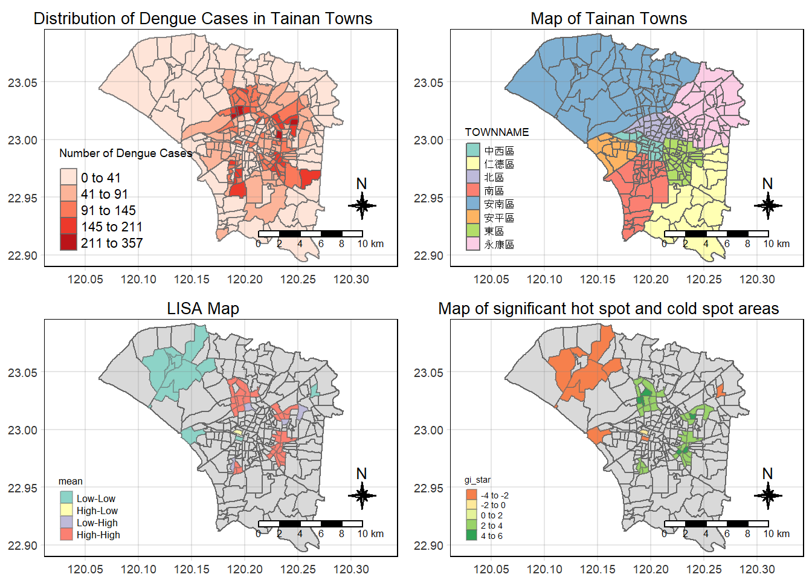

pacman::p_load(Kendall, plotly, tidyverse, tmap, sf, sp, sfdep)Take-home Exercise 2:Application of Spatial and Spatio-temporal Analysis Methods to Discover the Distribution of Dengue Fever in Tainan City, Taiwan
1.0 Introduction
1.1. Overview - Setting the Scene
Dengue Hemorrhagic Fever (in short dengue fever) is one of the most widespread mosquito-borne diseases in the most tropical and subtropical regions. It is an acute disease caused by dengue virus infection which is transmitted by female Aedes aegypti and Aedes albopictus mosquitoes.
In 2015, Taiwan had recorded the most severe dengue fever outbreak with more than 43,000 dengue cases and 228 deaths. Since then, the annual reported dengue fever cases were maintained at the level of not more than 200 cases. However, in 2023, Taiwan recorded 26703 dengue fever cases.
1.2 Objectives
In this study, we are interested to discover:
If the distribution of dengue fever outbreak at Tainan City, Taiwan are independent from spatial (space) and spatio-temporal (space-time).
If the outbreak is indeed spatial and spatio-temporal dependent, then, you would like to detect where are the clusters and outliers, and the emerging hot spot/cold spot areas.
1.3 Getting Started
In this take-home exercise, we will be using the following packages.
2.0 Data Acquisition
We will be using 2 data sets in this exercise:
| Data | Format | Description | Source |
|---|---|---|---|
| TAIWAN_VILLAGE_2020 | ESRI Shapefile | A geospatial data of village boundary of Taiwan | data.gov.tw |
| Dengue_Daily.csv | csv | An aspatial data of reported dengue cases in Taiwan since 1998 | Taiwan CDC Open Data Portal |
Create a new folder labelled Take-home_Ex02 and place all the files into this folder.
3.0 Importing Geospatial and Aspatial Data
3.1 Importing Geospatial data
TAIWAN_VILLAGE_2020
The TAIWAN_VILLAGE_2020 dataset was acquired in ESRI shapefile format (.shp). To utilise this dataset in the R-environment, we need to import it as an sf object using the st_read() function from the sf package. This function is used to read the shapefile containing the administrative boundaries of Tainan City and returns an sf object named tainan_sf.
tainan_sf <- st_read(dsn = "data/geospatial",
layer = "TAINAN_VILLAGE")Reading layer `TAINAN_VILLAGE' from data source
`C:\kt526\IS415-GAA\Take-home_Ex\Take-home_Ex02\data\geospatial'
using driver `ESRI Shapefile'
Simple feature collection with 649 features and 10 fields
Geometry type: POLYGON
Dimension: XY
Bounding box: xmin: 120.0269 ymin: 22.88751 xmax: 120.6563 ymax: 23.41374
Geodetic CRS: TWD97The dataset “TAINAN_VILLAGE” represents the polygon features delineating village boundaries within the Tainan City region of Taiwan. It comprises 649 features, each feature corresponding to a distinct village area. The dataset includes 10 fields providing additional attributes associated with each village polygon.
3.2 Importing Aspatial data
Dengue_Daily
The Dengue_Daily dataset is available in csv format (.csv) and was obtained from the Taiwan CDC Open Data Portal. Like the previous dataset, it needs to be imported into the R environment for use. However, since this dataset is aspatial and in csv format, a different method is required for reading it. We will utilize the read_csv() function to import the csv dataset and store the object in a tibble data frame named dengue.
dengue <- read_csv("data/aspatial/Dengue_Daily.csv")
head(dengue)# A tibble: 6 × 26
發病日 個案研判日 通報日 性別 年齡層 居住縣市 居住鄉鎮 居住村里
<date> <chr> <date> <chr> <chr> <chr> <chr> <chr>
1 1998-01-02 None 1998-01-07 男 40-44 屏東縣 屏東市 None
2 1998-01-03 None 1998-01-14 男 30-34 屏東縣 東港鎮 None
3 1998-01-13 None 1998-02-18 男 55-59 宜蘭縣 宜蘭市 None
4 1998-01-15 None 1998-01-23 男 35-39 高雄市 苓雅區 None
5 1998-01-20 None 1998-02-04 男 55-59 宜蘭縣 五結鄉 None
6 1998-01-22 None 1998-02-19 男 20-24 桃園市 蘆竹區 None
# ℹ 18 more variables: 最小統計區 <chr>, 最小統計區中心點X <chr>,
# 最小統計區中心點Y <chr>, 一級統計區 <chr>, 二級統計區 <chr>,
# 感染縣市 <chr>, 感染鄉鎮 <chr>, 感染村里 <chr>, 是否境外移入 <chr>,
# 感染國家 <chr>, 確定病例數 <dbl>, 居住村里代碼 <chr>, 感染村里代碼 <chr>,
# 血清型 <chr>, 內政部居住縣市代碼 <chr>, 內政部居住鄉鎮代碼 <chr>,
# 內政部感染縣市代碼 <chr>, 內政部感染鄉鎮代碼 <chr>4.0 Data Wrangling
4.1 Preparing a study area layer with specific towns of Tainan City, Taiwan
In this Take-home Exercise, we are interested in narrowing our focus to specific towns within Tainan City, specifically D01, D02, D04, D06, D07, D08, D32, and D39. To prepare a study area layer focusing on these specific towns, we can do the following:
towns <- c('D01', 'D02', 'D04', 'D06', 'D07', 'D08', 'D32', 'D39')
tainan_towns_sf <- tainan_sf %>%
select(COUNTYNAME,
TOWNID,
TOWNNAME,
VILLNAME,
geometry) %>%
mutate(TOWNNAME_VILLNAME = paste(TOWNNAME, VILLNAME, sep="_")) %>%
filter(TOWNID %in% towns)filtered_rows <- tainan_sf[tainan_sf$TOWNID %in% towns, ]
unique_townnames <- unique(filtered_rows$TOWNNAME)
print(unique_townnames)[1] "安南區" "仁德區" "中西區" "南區" "永康區" "東區" "北區" "安平區"The c() function is used to combine the specified towns into a vector (a one dimensional array) named towns. Next, we will filter the Tainan City spatial data frame (tainan_sf) based on the TOWNID column, selecting only those entries that match the towns of interest listed in the towns vector. This refined dataset, named tainan_towns_sf, will serve as our study area layer for further analysis or visualization tasks.
Tip
To ensure that the filter() function works properly, we can check the unique values present in the TOWNID field using the unique() function.
unique(tainan_towns_sf$TOWNID)[1] "D06" "D32" "D08" "D02" "D39" "D01" "D04" "D07"And here’s how our map for the study area looks like:

4.2 Preparing a dengue fever layer with specific towns of Tainan City, Taiwan
The subsequent tasks entail preparing the dengue fever layer for specific towns within Tainan City, Taiwan. This involves:
- Confining dengue fever layer with TOWNIDs D01, D02, D04, D06, D07, D08, D32 and D39
- Extracting dengue fever cases within epidemiology week 31-50, 2023
Firstly, we use the colnames() function to see all the column names present in dengue.
colnames(dengue) [1] "發病日" "個案研判日" "通報日"
[4] "性別" "年齡層" "居住縣市"
[7] "居住鄉鎮" "居住村里" "最小統計區"
[10] "最小統計區中心點X" "最小統計區中心點Y" "一級統計區"
[13] "二級統計區" "感染縣市" "感染鄉鎮"
[16] "感染村里" "是否境外移入" "感染國家"
[19] "確定病例數" "居住村里代碼" "感染村里代碼"
[22] "血清型" "內政部居住縣市代碼" "內政部居住鄉鎮代碼"
[25] "內政部感染縣市代碼" "內政部感染鄉鎮代碼"After reading in the dengue dataset, we will notice that the dataset contains 26 variables (columns). Similar to tainan_sf, not all columns will be relevant for our investigation. So, let us select the relevant columns from dengue and rename them so that its easier for our analysis later on.
發病日: ONSET_DATE
最小統計區中心點X: X_COORDINATE (longitude)
最小統計區中心點Y: Y_COORDINATE (latitude)
居住縣市: COUNTYNAME
居住鄉鎮: TOWNNAME
居住村里: VILLNAME
Let us save the output as a variable called dengue_extracted. Afterwards, we will display the structure of dengue_extracted using str().
dengue_extracted <- dengue %>%
select(發病日,
最小統計區中心點X,
最小統計區中心點Y,
居住縣市,
居住鄉鎮,
居住村里) %>%
rename("ONSET_DATE" = 發病日,
"X_COORDINATE" = 最小統計區中心點X,
"Y_COORDINATE" = 最小統計區中心點Y,
"COUNTYNAME" = 居住縣市,
"TOWNNAME" = 居住鄉鎮,
"VILLNAME" = 居住村里)str(dengue_extracted)tibble [106,861 × 6] (S3: tbl_df/tbl/data.frame)
$ ONSET_DATE : Date[1:106861], format: "1998-01-02" "1998-01-03" ...
$ X_COORDINATE: chr [1:106861] "120.505898941" "120.453657460" "121.751433765" "120.338158907" ...
$ Y_COORDINATE: chr [1:106861] "22.464206650" "22.466338948" "24.749214667" "22.630316700" ...
$ COUNTYNAME : chr [1:106861] "屏東縣" "屏東縣" "宜蘭縣" "高雄市" ...
$ TOWNNAME : chr [1:106861] "屏東市" "東港鎮" "宜蘭市" "苓雅區" ...
$ VILLNAME : chr [1:106861] "None" "None" "None" "None" ...The dengue_extracted is a tibble data.frame and we are now left with 6 variables.
We can also use RStudio’s Data Viewer to view the contents of dengue_extracted.
Notice the following after using the str() and viewing the dengue_extracted contents from Data Viewer :
X_COORDINATEandY_COORDINATEare in chr and contains “None”VILLNAMEcontains “None”ONSET_DATEincludes year such as 1998 (We only want year 2023)
Tip
The str() function is articularly useful for getting a quick summary of the structure of the data, including the data types of each column and a glimpse of the actual data.
We definitely have to do something about this … Let us fix these issues and also create a new column called EPIWEEK using the code chunk below. The output will be saved in dengue_2023.
dengue_2023 <- dengue_extracted %>%
filter(year(ONSET_DATE) == 2023 &
X_COORDINATE != "None" &
Y_COORDINATE != "None" &
VILLNAME != "None") %>%
mutate(X_COORDINATE = as.numeric(X_COORDINATE),
Y_COORDINATE = as.numeric(Y_COORDINATE),
EPIWEEK = epiweek(ONSET_DATE))
str(dengue_2023)tibble [24,047 × 7] (S3: tbl_df/tbl/data.frame)
$ ONSET_DATE : Date[1:24047], format: "2023-01-01" "2023-01-03" ...
$ X_COORDINATE: num [1:24047] 120 120 120 120 121 ...
$ Y_COORDINATE: num [1:24047] 22.8 22.8 22.7 23 24.2 ...
$ COUNTYNAME : chr [1:24047] "高雄市" "屏東縣" "高雄市" "台南市" ...
$ TOWNNAME : chr [1:24047] "岡山區" "里港鄉" "仁武區" "東區" ...
$ VILLNAME : chr [1:24047] "灣裡里" "三廍村" "文武里" "崇文里" ...
$ EPIWEEK : num [1:24047] 1 1 2 5 5 5 5 7 9 12 ...After running the code chunk above, we will see that the new column EPIWEEK has been added into dengue_2023. X_COORDINATE and Y_COORDINATE are also now having num data type.
To check if the “None” values are still present in X_COORDINATE, Y_COORDINATE and VILLNAME, we can run the following code chunk:
dengue_2023 %>%
select(contains("None"))# A tibble: 24,047 × 0If we were to look at dengue_2023 from the Data Viewer, we can observe that the COUNTYNAME contains counties besides 台南市, TOWNNAME contains more than the 8 unique towns we want and EPIWEEK is not within 31 to 50.
We can verify this by using the unique() function.
Unique County names (COUNTYNAME):
unique(dengue_2023$COUNTYNAME) [1] "高雄市" "屏東縣" "台南市" "台中市" "台東縣" "台北市" "花蓮縣" "雲林縣"
[9] "桃園市" "南投縣" "彰化縣" "新北市" "新竹市" "宜蘭縣" "新竹縣" "苗栗縣"
[17] "嘉義縣" "基隆市" "嘉義市" "澎湖縣" "金門縣"Unique Town names (TOWNNAME)
unique(dengue_2023$TOWNNAME) [1] "岡山區" "里港鄉" "仁武區" "東區" "北區" "鳥松區"
[7] "歸仁區" "鼓山區" "善化區" "楠梓區" "新化區" "大里區"
[13] "鳳山區" "北屯區" "大甲區" "西屯區" "永康區" "烏日區"
[19] "台東市" "萬華區" "壽豐鄉" "中區" "仁德區" "古坑鄉"
[25] "南屯區" "后里區" "龍潭區" "太平區" "南投市" "安南區"
[31] "茄萣區" "南區" "斗六市" "中壢區" "沙鹿區" "屏東市"
[37] "台西鄉" "湖內區" "芳苑鄉" "板橋區" "三民區" "太麻里鄉"
[43] "新營區" "左營區" "大寮區" "路竹區" "大社區" "永和區"
[49] "三重區" "中西區" "淡水區" "新市區" "阿蓮區" "中山區"
[55] "深坑區" "壯圍鄉" "新埔鎮" "關廟區" "虎尾鎮" "信義區"
[61] "西區" "苓雅區" "林內鄉" "前鎮區" "梓官區" "北投區"
[67] "竹山鎮" "柳營區" "松山區" "樹林區" "八德區" "前金區"
[73] "旗津區" "萬丹鄉" "左鎮區" "小港區" "楠西區" "七股區"
[79] "大同區" "頭份市" "汐止區" "大林鎮" "竹崎鄉" "莿桐鄉"
[85] "安平區" "平鎮區" "清水區" "梅山鄉" "彰化市" "豐原區"
[91] "中正區" "潮州鎮" "湖口鄉" "桃園區" "竹田鄉" "西港區"
[97] "花蓮市" "士林區" "安樂區" "文山區" "佳里區" "大安區"
[103] "大雅區" "南化區" "楊梅區" "彌陀區" "八里區" "麻豆區"
[109] "溪州鄉" "斗南鎮" "新莊區" "大村鄉" "玉井區" "竹北市"
[115] "新店區" "外埔區" "蘆洲區" "竹東鎮" "林園區" "大埤鄉"
[121] "六甲區" "安定區" "西螺鎮" "蘆竹區" "太保市" "香山區"
[127] "橋頭區" "二林鎮" "官田區" "通霄鎮" "九如鄉" "大樹區"
[133] "旗山區" "學甲區" "大溪區" "七堵區" "中和區" "大內區"
[139] "龍崎區" "內門區" "民雄鄉" "新興區" "鹽埕區" "桃源區"
[145] "大肚區" "南港區" "名間鄉" "田寮區" "長治鄉" "鹿港鎮"
[151] "山上區" "神岡區" "泰山區" "下營區" "埔里鎮" "水上鄉"
[157] "佳冬鄉" "燕巢區" "鹽水區" "中埔鄉" "杉林區" "五股區"
[163] "布袋鎮" "朴子市" "新園鄉" "三峽區" "來義鄉" "內湖區"
[169] "麥寮鄉" "麟洛鄉" "礁溪鄉" "林口區" "番路鄉" "將軍區"
[175] "內埔鄉" "龜山區" "二崙鄉" "和美鎮" "甲仙區" "公館鄉"
[181] "東港鎮" "美濃區" "仁愛鄉" "宜蘭市" "龍井區" "觀音區"
[187] "恆春鎮" "頭城鎮" "後壁區" "土城區" "綠島鄉" "高樹鄉"
[193] "新豐鄉" "春日鄉" "萬巒鄉" "埤頭鄉" "員林市" "馬公市"
[199] "溪湖鎮" "新港鄉" "鹽埔鄉" "三星鄉" "林邊鄉" "五結鄉"
[205] "潭子區" "北斗鎮" "新埤鄉" "霧峰區" "集集鎮" "東山區"
[211] "湖西鄉" "蘇澳鎮" "瑪家鄉" "土庫鎮" "崁頂鄉" "牡丹鄉"
[217] "崙背鄉" "成功鎮" "六龜區" "金城鎮" "伸港鄉" "花壇鄉"
[223] "四湖鄉" "竹南鎮" "鹿谷鄉" Unique Epiweek (EPIWEEK)
unique(dengue_2023$EPIWEEK) [1] 1 2 5 7 9 12 13 14 15 16 17 19 20 22 23 24 25 26 27 28 29 30 31 32 33
[26] 34 35 36 37 38 39 40 41 42 43 44 45 46 47 48 49 50 51 524.2.1 Confining dengue fever layer with TOWNIDs D01, D02, D04, D06, D07, D08, D32 and D39
We need to filter COUNTYNAME to contain only 台南市 and TOWNNAME to contain only the 8 specific towns (安南區, 仁德區, 中西區, 南區, 永康區, 東區, 北區, 安平區). We will save the output in dengue_fever_layer_df.
dengue_fever_layer_df <- dengue_2023 %>%
mutate(TOWNNAME_VILLNAME = paste(TOWNNAME, VILLNAME, sep="_")) %>%
filter(COUNTYNAME == "台南市" & TOWNNAME %in% unique_townnames)Now, let us check COUNTYNAME and TOWNNAME in dengue_fever_layer_df. We should observe that we only have 1 specific county and 8 towns.
cat("County:", unique(dengue_fever_layer_df$COUNTYNAME))County: 台南市cat("Towns:", unique(dengue_fever_layer_df$TOWNNAME))Towns: 東區 永康區 仁德區 北區 安南區 南區 中西區 安平區4.2.2 Extracting dengue fever cases within epidemiology week 31-50, 2023
Let us visualize the distribution of dengue fever cases across the epidemiology weeks in 2023.
ggplot(dengue_fever_layer_df, aes(x = EPIWEEK)) +
geom_histogram(binwidth = 1, color = "grey") +
labs(x = "EPIWEEK", y = "Number of dengue cases") +
ggtitle("Distribution of Dengue Cases in 2023 by Epidemiology weeks") +
theme_minimal()
More than 80% of the reported dengue fever cases occurred in epidemiology week 31-50, 2023. Let us filter out these dengue fever cases that falls within epidemiology week 31 to 50.
dengue_2023_epiweeks_31_50_df <- dengue_fever_layer_df %>%
filter(between(EPIWEEK, 31, 50) )
unique(dengue_2023_epiweeks_31_50_df$EPIWEEK) [1] 31 32 33 34 35 36 37 38 39 40 41 42 43 44 45 46 47 48 49 504.3 Preparing a dengue fever layer in spacetime d3 class of sfdep
The next task is to prepare dengue fever layer in spacetime d3 class using the sfdep package.
dengue_grp <- dengue_2023_epiweeks_31_50_df %>%
group_by(TOWNNAME_VILLNAME, EPIWEEK) %>%
summarise(num_dengue_cases = n()) %>%
complete(EPIWEEK = 31:50, fill = list(num_dengue_cases = 0))
dengue_grp <- as_tibble(dengue_grp)tainan_towns_with_dengue <- tainan_towns_sf %>%
mutate(TOWNNAME_VILLNAME = paste(TOWNNAME, VILLNAME, sep="_")) %>%
select(TOWNNAME_VILLNAME, geometry) %>%
filter(TOWNNAME_VILLNAME %in% unique(dengue_grp$TOWNNAME_VILLNAME))tainan_dengue_st <- spacetime(.data = dengue_grp,
.geometry = tainan_towns_with_dengue,
.loc_col = "TOWNNAME_VILLNAME",
.time_col = "EPIWEEK")is_spacetime_cube(tainan_dengue_st)[1] TRUE
Note
The TRUE return confirms that tainan_dengue_st is indeed an time-space cube.
4.4 Preparing for Exploratory Data Analysis
total_dengue_cases_by_village <- dengue_grp %>%
select(TOWNNAME_VILLNAME,
num_dengue_cases) %>%
group_by(TOWNNAME_VILLNAME) %>%
summarise(total_dengue_cases = sum(num_dengue_cases))tainan_dengue_cases_by_village <- left_join(tainan_towns_sf,
total_dengue_cases_by_village,
by = "TOWNNAME_VILLNAME") %>%
replace_na(list(total_dengue_cases = 0))which(colSums(is.na(tainan_dengue_cases_by_village))>0)named integer(0)5.0 Exploratory Data Analysis
In this section, we want to visualize the distribution of dengue fever cases across the 8 specific towns (安南區, 仁德區, 中西區, 南區, 永康區, 東區, 北區, 安平區) and within the epidemiology weeks from 31 to 50. By doing so, we can gain insights into the intensity of the disease and discover any patterns.
Code
tmap_mode("plot")
tainan_dengue_cases_by_village_map <- tm_shape(tainan_dengue_cases_by_village) +
tm_fill("total_dengue_cases",
style = "jenks",
palette = "Reds",
title = "Number of Dengue Cases",
legend.show = TRUE,
popup.vars = c("total_dengue_cases")) +
tm_layout(main.title = "Distribution of Dengue Cases in Tainan Towns",
main.title.position = "center",
main.title.size = 0.85,
legend.height = 0.5,
legend.width = 0.4,
frame = TRUE) +
tm_borders(alpha = 0.8) +
tm_compass(type="8star", size = 1.5) +
tm_scale_bar() +
tm_grid(alpha = 0.2)
tainan_towns_map <- tm_shape(tainan_towns_sf) +
tm_polygons("TOWNNAME") +
tm_layout(main.title = "Map of Tainan Towns",
main.title.position = "center",
main.title.size = 0.85,
legend.height = 0.3,
legend.width = 0.4,
legend.title.size = 0.8,
frame = TRUE) +
tm_borders(alpha = 0.8) +
tm_compass(type="8star", size = 1.5) +
tm_scale_bar() +
tm_grid(alpha = 0.2)
tmap_arrange(tainan_dengue_cases_by_village_map, tainan_towns_map)The choropleth map on the left is used to visualize this distribution. The total number of dengue cases reported is by village level and it can range from 0 to 357. This means that there are villages that are totally clear from dengue cases.
Another interesting insight we discover is that villages that are situated nearer to the center tend to have higher number of dengue cases reported.
equal <- tm_shape(tainan_dengue_cases_by_village) +
tm_fill("total_dengue_cases",
n = 5,
style = "equal") +
tm_borders(alpha = 0.5) +
tm_layout(main.title = "Equal interval classification")
quantile <- tm_shape(tainan_dengue_cases_by_village) +
tm_fill("total_dengue_cases",
n = 5,
style = "quantile") +
tm_borders(alpha = 0.5) +
tm_layout(main.title = "Equal quantile classification")
tmap_arrange(equal,
quantile,
asp=1,
ncol=2)6.0 Spatial Autocorrelation Analysis
“Everything is related to everything else, but near things are more related than distant things.”
– Waldo Tobler, The First Law of Geography
Spatial Autocorrelation is used to describe the presence of systematic spatial variation or correlation in a variable.
The two main types of Spatial Autocorrelation Analysis are:
Global spatial autocorrelation analysis
Local spatial autocorrelation analysis
6.2.1 Global Spatial Autocorrelation Analysis
6.2.1.1 Gloabl Measures of Spatial Autocorrelation: Moran’s I and Geary’s C
We can assess spatial autocorrelation using the Moran’s I or Geary’s C.
| Moran’s I | Geary’s C |
|---|---|
 |
|
Describe how features differ from the values in the study area as a whole. The value of Moran’s I can range from -1 to 1:
|
Describing how features differ from their immediate neighbours. The value of Geary’s C can range from 0 to >1:
|
In this Take-home Exercise, we use Moran’s I to test the spatial autocorrelation. To test for spatial autocorrelation, we can follow the steps below:
- State the null and alternative hypotheses
- H0 (null hypothesis): The distribution of dengue fever outbreak at Tainan City are independent from space and time (i.e. spatial indepndent, randomly dispersed)
- H1 (alternative hypothesis): The distribution of dengue fever outbreak at Tainan City are not independent from space and time (i.e. spatial dependent)
- Choose the significance level ⍺
- Statistically, we select the confident interval as 95% => alpha value (⍺) = 0.05.
- Derive the Moran’s I, z-score and p-value
- State the conclusion
- Reject the Null hypothesis (H0) if p-value < alpha value (⍺) = 0.05
- Failed to reject the Null Hypothesis (H0) if p-value > alpha value (⍺) = 0.05
6.2.1.2 Computing Spatial Weights
To calculate global spatial autocorrelation statistics effectively, we need to first construct the spatial weights for the study area. The spatial weights play a critical role in defining the neighbourhood relationships between geographical units within the study area.
There are several methods to construct spatial weights. We will be using the Contiguity-Based method to construct the spatial weights and derive the Weights Matrix.
Contiguity-Based Weights
This method establishes neighbourhood relationships based on contiguity, where geographical units sharing common borders (boundaries) are considered neighbours. Contiguity can be further categorised into the following cases:

“rook” criterion (sharing a common edge)
“bishop” criterion (sharing common vertices)
“queen” criterion (sharing a common edge or vertex)
Note
“rook” and “queen” criterions are more commonly used.
To derive the Contiguity-Based Weights,
wm_q <- tainan_dengue_cases_by_village %>%
mutate(nb = st_contiguity(geometry),
wt = st_weights(nb,
style = "W"),
.before = 1)
glimpse(wm_q)Rows: 258
Columns: 9
$ nb <nb> <6, 118, 160>, <126, 128, 138, 168, 222>, <68, 69, 1…
$ wt <list> <0.3333333, 0.3333333, 0.3333333>, <0.2, 0.2, 0.2,…
$ COUNTYNAME <chr> "臺南市", "臺南市", "臺南市", "臺南市", "臺南市", "…
$ TOWNID <chr> "D06", "D32", "D08", "D02", "D06", "D06", "D08", "D…
$ TOWNNAME <chr> "安南區", "仁德區", "中西區", "南區", "安南區", "安…
$ VILLNAME <chr> "青草里", "保安里", "赤嵌里", "大成里", "城北里", "…
$ TOWNNAME_VILLNAME <chr> "安南區_青草里", "仁德區_保安里", "中西區_赤嵌里", …
$ total_dengue_cases <int> 2, 19, 111, 29, 1, 10, 37, 48, 108, 66, 26, 2, 3, 1…
$ geometry <POLYGON [°]> POLYGON ((120.1176 23.08387..., POLYGON ((1…6.2.1.3 Perform Global Moran’s I Test
After formulating the null and alternative hypotheses, we can perform the Global Moran’s I Test to derive the Moran’s I, z-score and p-value using the global_moran_test() function from sfdep package.
global_moran_test(wm_q$total_dengue_cases,
wm_q$nb,
wm_q$wt)
Moran I test under randomisation
data: x
weights: listw
Moran I statistic standard deviate = 11.538, p-value < 2.2e-16
alternative hypothesis: greater
sample estimates:
Moran I statistic Expectation Variance
0.419567083 -0.003891051 0.001347083 Interpreting the results
The Moran I statistic standard deviate is 11.538.
The Moran’s I statistic is 0.420. This indicates positive spatial correlation (signs of clusterings)
The p-value is extremely small (< 2.2e-16).
We observe the p-value obtained is lower than the significance level (⍺) of 0.05. Thus, we have enough evidence to reject the null hypothesis and conclude the distribution of dengue fever outbreak at Tainan City are not independent from space and time, but spatially dependent. This spatial dependency implies that the likelihood of a dengue fever outbreak in one village is not occurred by random chance but is influenced by neighboring villages.
6.2.1.4 Perform Global Moran’s I Permutation Test with Monte-Carlo Simulation
In practice, the Monte-Carlo Simulation should be used to perform the statistical test. We can use the global_moran_perm() function of sfdep package to run the Monte-Carlo Simulation.
Note
The set.seed() function in R is used to create reproducible results when writing code that involves creating variables that take on random values. The value placed in the seed can be any random integer. By using the set.seed() function, you guarantee that the same random values are produced each time you run the code. Read more about setting seeds here.
set.seed(1234)
global_moranI_perm <- global_moran_perm(wm_q$total_dengue_cases,
wm_q$nb,
wm_q$wt,
nsim = 999)
global_moranI_perm
Monte-Carlo simulation of Moran I
data: x
weights: listw
number of simulations + 1: 1000
statistic = 0.41957, observed rank = 1000, p-value < 2.2e-16
alternative hypothesis: two.sided
Important
The number of simulations is always equal to nsim + 1. Since nsim = 999, this means that we will be performing 1000 simulations.
Interpreting the results
The Moran’s I statistic is 0.420. This indicates positive spatial correlation (signs of clusterings)
The p-value is extremely small (< 2.2e-16).
The results from the Monte-Carlo Simulation aligns with the Global Moran’s I Test conducted earlier on. The p-value obtained is lower than the significance level (⍺) of 0.05. This means that we enough evidence to reject the null hypothesis and conclude the distribution of dengue fever outbreak at Tainan City are not independent from space and time, but spatially dependent.
6.2.1.5 Visualising Global Monte-Carlo Moran’s I
Let us visualise the simulated Moran’s I test statistics by plotting the distribution of the statistical values using a histogram.
hist(global_moranI_perm$res,
freq=TRUE,
breaks=20,
xlab="Simulated Moran's I")
abline(v=0,
col="red") We can also look at the summary statistics using the summary() function.
summary(global_moranI_perm$res[1:999]) Min. 1st Qu. Median Mean 3rd Qu. Max.
-0.096859 -0.029067 -0.005498 -0.003422 0.021568 0.118326 6.2.2 Local Spatial Autocorrelation Analysis
Even though the Global Spatial Autocorrelation analysis can confirm the presence of clusters or a positive spatial relationship between number of dengue cases and their respective villages, it does not pinpoint the specific locations of these clusters. This is where Local Spatial Autocorrelation analysis becomes essentially useful.
6.2.2.1 Computing Local Moran’s I and p-value
To conduct the Local Spatial Autocorrelation analysis, we will need to compute the Local Moran’s I using the local_moran() function. The output lisa will be saved as a sf data.frame.
lisa <- wm_q %>%
mutate(local_moran = local_moran(
total_dengue_cases, nb, wt, nsim = 999),
.before = 1) %>%
unnest(local_moran)
head(lisa)Simple feature collection with 6 features and 20 fields
Geometry type: POLYGON
Dimension: XY
Bounding box: xmin: 120.0936 ymin: 22.9156 xmax: 120.2585 ymax: 23.08827
Geodetic CRS: TWD97
# A tibble: 6 × 21
ii eii var_ii z_ii p_ii p_ii_sim p_folded_sim skewness
<dbl> <dbl> <dbl> <dbl> <dbl> <dbl> <dbl> <dbl>
1 0.968 -0.0188 0.361 1.64 0.101 0.032 0.016 -0.785
2 0.476 0.00313 0.113 1.41 0.160 0.09 0.045 -0.810
3 -0.485 -0.00141 0.0807 -1.70 0.0886 0.06 0.03 0.591
4 0.00611 -0.00830 0.0546 0.0617 0.951 0.95 0.475 -0.576
5 1.01 0.00667 0.256 1.98 0.0477 0.004 0.002 -0.753
6 0.896 -0.0165 0.108 2.77 0.00553 0.002 0.001 -0.539
# ℹ 13 more variables: kurtosis <dbl>, mean <fct>, median <fct>, pysal <fct>,
# nb <nb>, wt <list>, COUNTYNAME <chr>, TOWNID <chr>, TOWNNAME <chr>,
# VILLNAME <chr>, TOWNNAME_VILLNAME <chr>, total_dengue_cases <int>,
# geometry <POLYGON [°]>Based on the documentation for sfdep, the output will be a will be data.frame containing the following columns:
ii: local moran statisticseii: expectation of local moran statisticsvar_ii: variance of local moran statisticsz_ii: standard deviate of local moran statisticsp_ii: p-value of local moran statisticsp_ii_sim: Forlocalmoran_perm,rank()andpunif()of observed statistic rank for [0, 1] p-values usingalternative=p_folded_sim: the simulation folded [0, 0.5] range ranked p-value
6.2.2.2 Visualizing local Moran’s I and p-value
The tmap functions are used to prepare a choropleth map by using values in the ii (local moran statistics) and p_ii_sim fields.
tmap_mode("plot")
map1 <- tm_shape(lisa) +
tm_fill("ii") +
tm_borders(alpha = 0.5) +
tm_view(set.zoom.limits = c(6,8)) +
tm_layout(main.title = "Local Moran's I",
main.title.position = "center",
main.title.size = 0.8,
legend.height = 0.3,
legend.width = 0.4,
legend.title.size = 0.8,
frame = TRUE) +
tm_borders(alpha = 0.8) +
tm_compass(type="8star", size = 1.5) +
tm_scale_bar() +
tm_grid(alpha = 0.2)
map2 <- tm_shape(lisa) +
tm_fill("p_ii_sim",
breaks = c(0, 0.001, 0.01, 0.05, 1),
labels = c("0.001", "0.01", "0.05", "Not sig")) +
tm_borders(alpha = 0.5) +
tm_layout(main.title = "p-value of Local Moran's I (with simulation)",
main.title.position = "center",
main.title.size = 0.8,
legend.height = 0.3,
legend.width = 0.4,
legend.title.size = 0.8,
frame = TRUE) +
tm_borders(alpha = 0.8) +
tm_compass(type="8star", size = 1.5) +
tm_scale_bar() +
tm_grid(alpha = 0.2)
tmap_arrange(map1, map2, ncol = 2)6.2.2.3 Visualize the Local Indicator of Spatial Association (LISA) map
The LISA map is a categorical map showing outliers and clusters. LISA map is an interpreted map by combining local Moran’s I of geographical areas and their respective p-values. There are two types of outliers namely: High-Low and Low-High outliers. Likewise, there are two types of clusters namely: High-High and Low-Low clusters.
| Outliers |
|
| Clusters |
|
Code
lisa_sig <- lisa %>%
filter(p_ii < 0.05)
tmap_mode("plot")
lisa_map <- tm_shape(lisa) +
tm_polygons() +
tm_borders(alpha = 0.5) +
tm_shape(lisa_sig) +
tm_fill("mean") +
tm_borders(alpha = 0.4) +
tm_layout(main.title = "LISA Map",
main.title.position = "center",
main.title.size = 0.85,
legend.height = 0.3,
legend.width = 0.4,
legend.title.size = 0.8,
frame = TRUE) +
tm_borders(alpha = 0.8) +
tm_compass(type="8star", size = 1.5) +
tm_scale_bar() +
tm_grid(alpha = 0.2)
tmap_arrange(lisa_map, tainan_towns_map, ncol = 2)Interpreting the results
| Outliers |
|
| Clusters |
|
6.2.3 Hot Spot and Cold Spot Area Analysis (HCSA)
HCSA uses spatial weights to identify locations of statistically significant hot spots and cold spots in an spatially weighted attribute that are in proximity to one another based on a calculated distance. The analysis groups features when similar high (hot) or low (cold) values are found in a cluster. The polygon features usually represent administration boundaries or a custom grid structure.
6.2.3.1 Derive Spatial Weights
As usual, we will need to derive a spatial weight matrix before we can compute local Gi* statistics. The spatial weight matrix will saved in wm_idw.
wm_idw <- tainan_dengue_cases_by_village %>%
mutate(nb = st_contiguity(geometry),
wts = st_inverse_distance(nb, geometry,
scale = 1,
alpha = 1),
.before = 1)6.2.3.2 Compute Gi* statistics
Next, let us compute the Gi* statistics with permutation. nsim is set to 999. This means that we will run 1000 simulations.
HCSA <- wm_idw %>%
mutate(local_Gi = local_gstar_perm(
total_dengue_cases, nb, wt, nsim = 999),
.before = 1) %>%
unnest(local_Gi)
HCSASimple feature collection with 258 features and 16 fields
Geometry type: POLYGON
Dimension: XY
Bounding box: xmin: 120.0627 ymin: 22.89401 xmax: 120.2925 ymax: 23.09144
Geodetic CRS: TWD97
# A tibble: 258 × 17
gi_star e_gi var_gi p_value p_sim p_folded_sim skewness kurtosis nb
<dbl> <dbl> <dbl> <dbl> <dbl> <dbl> <dbl> <dbl> <nb>
1 -1.95 0.00291 2.65e-6 -1.61 0.107 0.03 0.015 0.885 <int>
2 -1.64 0.00342 1.83e-6 -1.47 0.142 0.104 0.052 0.512 <int>
3 -1.44 0.00419 1.30e-6 -1.81 0.0708 0.046 0.023 0.473 <int>
4 -0.243 0.00360 1.88e-6 -0.0431 0.966 0.958 0.479 0.568 <int>
5 -2.23 0.00303 2.15e-6 -1.92 0.0548 0.008 0.004 0.675 <int>
6 -2.86 0.00348 1.47e-6 -2.72 0.00653 0.002 0.001 0.634 <int>
7 -0.851 0.00350 1.97e-6 -0.729 0.466 0.51 0.254 0.839 <int>
8 0.0858 0.00379 1.17e-6 0.165 0.869 0.8 0.4 0.449 <int>
9 1.85 0.00432 1.94e-6 1.66 0.0964 0.134 0.067 0.637 <int>
10 -0.971 0.00394 1.81e-6 -1.05 0.296 0.284 0.142 0.538 <int>
# ℹ 248 more rows
# ℹ 8 more variables: wts <list>, COUNTYNAME <chr>, TOWNID <chr>,
# TOWNNAME <chr>, VILLNAME <chr>, TOWNNAME_VILLNAME <chr>,
# total_dengue_cases <int>, geometry <POLYGON [°]>6.2.3.3 Mapping Gi* statistics
tmap_mode("plot")
map1 <- tm_shape(HCSA) +
tm_fill("gi_star") +
tm_borders(alpha = 0.5) +
tm_view(set.zoom.limits = c(6,8)) +
tm_layout(main.title = "Gi* of Dengue cases",
main.title.position = "center",
main.title.size = 0.85,
legend.height = 0.3,
legend.width = 0.4,
legend.title.size = 0.8,
frame = TRUE) +
tm_borders(alpha = 0.8) +
tm_compass(type="8star", size = 1.5) +
tm_scale_bar() +
tm_grid(alpha = 0.2)
map2 <- tm_shape(HCSA) +
tm_fill("p_value",
breaks = c(0, 0.001, 0.01, 0.05, 1),
labels = c("0.001", "0.01", "0.05", "Not sig")) +
tm_borders(alpha = 0.5) +
tm_layout(main.title = "p-value of Gi*",
main.title.position = "center",
main.title.size = 0.85,
legend.height = 0.3,
legend.width = 0.4,
legend.title.size = 0.8,
frame = TRUE) +
tm_borders(alpha = 0.8) +
tm_compass(type="8star", size = 1.5) +
tm_scale_bar() +
tm_grid(alpha = 0.2)
tmap_arrange(map1, map2, ncol = 2)Now, we are ready to plot the significant (i.e. p-values < 0.05) hot spot and cold spot areas by using appropriate tmap functions shown in the code chunk below.
HCSA_sig <- HCSA %>%
filter(p_sim < 0.05)
tmap_mode("plot")
tainan_towns_map <- tm_shape(tainan_towns_sf) +
tm_polygons("TOWNNAME") +
tm_layout(main.title = "Map of Tainan Towns",
main.title.position = "center",
main.title.size = 0.85,
legend.height = 0.55,
legend.width = 0.4,
legend.title.size = 0.8,
frame = TRUE) +
tm_borders(alpha = 0.8) +
tm_compass(type="8star", size = 1.5) +
tm_scale_bar() +
tm_grid(alpha = 0.2)
HCSA_sig_map <- tm_shape(HCSA) +
tm_polygons() +
tm_borders(alpha = 0.5) +
tm_shape(HCSA_sig) +
tm_fill("gi_star") +
tm_borders(alpha = 0.5) +
tm_layout(main.title = "Map of significant hot spot and cold spot areas",
main.title.position = "center",
main.title.size = 0.85,
legend.height = 0.3,
legend.width = 0.4,
legend.title.size = 0.8,
frame = TRUE) +
tm_borders(alpha = 0.8) +
tm_compass(type="8star", size = 1.5) +
tm_scale_bar() +
tm_grid(alpha = 0.2)
tmap_arrange(tainan_dengue_cases_by_village_map, tainan_towns_map,
lisa_map, HCSA_sig_map, widths = c(.5, .5))
Interpretation of Getis-Ord Gi and Gi*
A hot spot area: significant and positive if location i is associated with relatively high values of the surrounding locations.
A cold spot area: significant and negative if location i is associated with relatively low values in surrounding locations.
Interpreting the results
By comparing all the four maps above, we are able to come up with the following conclusions:
Certain villages in 安南區 are cold spot areas while some are hot spot areas
However, majority of the villages in 安南區 are cold spot areas. These cold spot areas have relatively low number of dengue cases reported (ranging from 0 to 41 number of dengue cases)
The villages identified as hot spot areas in 安南區 and 永康區 have relatively high number of dengue cases reported (ranging from 211 to 357 number of dengue cases)
Certain villages in 東區 are identify as hot spot areas. These hot spot areas have relatively high number of dengue cases reported (ranging from 91 to 145)
Let us find out the names of these villages that have high number of dengue cases reported
hotspot_areas <- HCSA_sig %>%
arrange(desc(gi_star)) %>%
head(3)
cat("Villages with high number of dengue cases reported (TOWNNAME_VILLNAME): ", hotspot_areas$TOWNNAME_VILLNAME)Villages with high number of dengue cases reported (TOWNNAME_VILLNAME): 安南區_溪墘里 安南區_大安里 永康區_三合里7.0 Emerging Hot Spot Analysis (EHSA)
Emerging Hot Spot Analysis (EHSA) is a spatio-temporal analysis method used for revealing and describing how hot spot and cold spot areas evolve over time. We will be using the spacetime cube that was created previously.
7.1 Derive Spatial Weights
Firstly, we need to derive the spatial weights.
tainan_dengue_nb <- tainan_dengue_st %>%
activate("geometry") %>%
mutate(nb = include_self(st_contiguity(geometry)),
wt = st_inverse_distance(nb, geometry,
scale = 1,
alpha = 1),
.before = 1) %>%
set_nbs("nb") %>%
set_wts("wt")
head(tainan_dengue_nb)# A tibble: 6 × 5
TOWNNAME_VILLNAME EPIWEEK num_dengue_cases nb wt
<chr> <dbl> <int> <list> <list>
1 安南區_青草里 31 0 <int [4]> <dbl [4]>
2 仁德區_保安里 31 1 <int [5]> <dbl [5]>
3 中西區_赤嵌里 31 0 <int [4]> <dbl [4]>
4 南區_大成里 31 0 <int [5]> <dbl [5]>
5 安南區_城北里 31 0 <int [4]> <dbl [4]>
6 安南區_城南里 31 0 <int [6]> <dbl [6]>7.2 Compute Gi* statistics
Next, we will compute the Gi* statistics using local_gstar_perm() function.
gi_stars <- tainan_dengue_nb %>%
group_by(EPIWEEK) %>%
mutate(gi_star = local_gstar_perm(
num_dengue_cases, nb, wt)) %>%
tidyr::unnest(gi_star)7.3 Mann-Kendall Test
The Mann-Kendall statistical test for trend is used to assess whether a set of data values is increasing over time or decreasing over time, and whether the trend in either direction is statistically significant. The null and alternative hypotheses we have are:
- H0 (null hypothesis): There is no monotonic trend in the series
- H1 (alternative hypothesis): A trend exists (i.e. this trend can be positive, negative or non-null)
Statistically, we select the confident interval as 95%. Therefore, the significance level (alpha value ⍺) = 0.05. We will be select 安南區_溪墘里 as our study area since it has reported the highest number of dengue cases.
cbg <- gi_stars %>%
ungroup() %>%
filter(TOWNNAME_VILLNAME == "安南區_溪墘里") |>
select(TOWNNAME_VILLNAME, EPIWEEK, gi_star)p <- ggplot(data = cbg,
aes(x = EPIWEEK,
y = gi_star)) +
geom_line() +
theme_light()
ggplotly(p)Interpreting the results
By the looking at the graph of Gi* plotted against EPIWEEK, we observed a downward trend. This is statistically confirmed by the Mann-Kendall Test. Thus, we can reject the null hypothesis that there is no monotonic trend and infer that as time goes by, the spread of dengue cases in 安南區_溪墘里 gradually decreases in comparison to the other villages.
cbg %>%
summarise(mk = list(
unclass(
Kendall::MannKendall(gi_star)))) %>%
tidyr::unnest_wider(mk)# A tibble: 1 × 5
tau sl S D varS
<dbl> <dbl> <dbl> <dbl> <dbl>
1 -0.632 0.000113 -120 190. 950ehsa <- gi_stars %>%
group_by(TOWNNAME_VILLNAME) %>%
summarise(mk = list(
unclass(
Kendall::MannKendall(gi_star)))) %>%
tidyr::unnest_wider(mk)emerging <- ehsa %>%
arrange(sl, abs(tau)) %>%
slice(1:5)7.4 Performing Emerging Hotspot Analysis
ehsa <- emerging_hotspot_analysis(
x = tainan_dengue_st,
.var = "num_dengue_cases",
k = 1,
nsim = 99
)7.4.1 Visualising the distribution of EHSA classes
ggplot(data = ehsa,
aes(x = classification)) +
geom_bar() +
theme(axis.text.x = element_text(angle = 45, hjust = 1, vjust = 1))Interpreting the results
More than 80 villages are classified as oscillating hotspots. This means that these villages are statistically significant hot spot for the final time-step interval that has a history of also being a statistically significant cold spot during a prior time step.
Less than 10 villages are classified as new hotspot. This means that these villages are statistically significant hot spot for the final time step and has never been a statistically significant hot spot before.
7.4.2 Visualising EHSA
tainan_ehsa <- tainan_towns_sf %>%
left_join(ehsa,
by = join_by(TOWNNAME_VILLNAME == location))ehsa_sig <- tainan_ehsa %>%
filter(p_value < 0.05)
tmap_mode("plot")
tm_shape(tainan_ehsa) +
tm_polygons() +
tm_borders(alpha = 0.5) +
tm_shape(ehsa_sig) +
tm_fill("classification") +
tm_borders(alpha = 0.4)